Über mich
Journalismus für die Arbeitswelt von morgen
Geboren 1998 an der Ostsee, seit 2018 in Medienwelt zu Hause: Ich schreibe, leite und entwickle journalistische Inhalte rund um Arbeitsmarkt, Arbeitspsychologie, Berufsleben, Management, Gehalt, Generationenkonflikt und Karriereplanung – mit einem besonderen Blick auf die Frage, wie Künstliche Intelligenz die Art verändert, wie wir arbeiten, führen, Karriere machen und Unternehmen erfolgreich aufbauen.
Dabei ist es nicht nur meine Leidenschaft, über diese Themen zu berichten – ich bin auch selbst mit 25 Jahren Führungskraft geworden. Menschen zu entwickeln, Potenziale zu fördern und gemeinsam auf ein Ziel hinzuarbeiten, macht mir dabei besonders viel Spaß.
Aktuell leite ich als Teamlead das Autoren-Team von Business Insider Deutschland und verantworte Texte rund um Karriere und Berufsleben für das Wirtschaftsressort von WELT und WELT am SONNTAG. Meine Texte, Interviews und Formate erreichen monatlich Tausende Leser:innen – sei es über gedruckte Zeitungen, die Online-Ausgaben von Business Insider und WELT, den täglichen Newsletter oder mein privates LinkedIn-Profil.
seit 01/2026 Leitung Autorenteam Business Insider Deutschland ▾
- Führung und Entwicklung von Redakteur:innen, festen Autor:innen und Freelancern inklusive Themenvergabe, Briefings, Qualitätskontrolle und Performance-Feedback
- Strategische Themenplanung und Priorisierung für BUSINESS INSIDER Deutschland
- Co-Autorin des BI Daily Newsletters – von Themenauswahl und redaktioneller Einordnung über Schreiben bis zur Performance-Analyse
- Regelmäßige CvD-Verantwortung für die Tagessteuerung der Redaktion: Homepage, Veröffentlichungsplanung, Freigaben und Koordination
- Steuerung redaktioneller Abläufe in Breaking-News- und Sondersituationen
- Analyse und Optimierung von Content-Performance anhand von KPI-Daten
- Entwicklung neuer Formate, Prozesse und redaktioneller Standards
- Zusammenarbeit mit Chefredaktion, Ressortleitungen und interdisziplinären Teams
- Moderation von Events und externe Repräsentation von Business Insider als Medienpartnerin
06/2025 Teamlead „Karriere & Verbraucher" bei WELT & Business Insider ▾
- Führung eines siebenköpfigen Redaktionsteams inklusive One-on-Ones, Mitarbeiter- und Entwicklungsgesprächen, Performance Management und Konfliktmanagement
- Entwicklung und Umsetzung von Themenstrategien für zwei Medienmarken mit unterschiedlichen Zielgruppen, Tonalitäten und redaktionellen Anforderungen
- Strategische Themenplanung und Priorisierung für WELT und Business Insider
- Redaktionelle Steuerung und Qualitätssicherung
- Eigene journalistische Arbeit, darunter zwei Titelthemen für die WELT am SONNTAG
- Analyse und Optimierung der Content-Performance mit Adobe Analytics
- Zusammenarbeit mit Chefredaktion, Ressortleitungen sowie Audience, Analytics, SEO, Social, Product und Commercial
- Koordination von redaktionellen und markenübergreifenden Anforderungen
- Entwicklung und Optimierung von Formaten und Prozessen
03/2024 Leitende Redakteurin, Business Insider Deutschland ▾
- Führung und Entwicklung eines Teams aus acht Werkstudierenden inklusive Aufgabenverteilung, Priorisierung, One-on-Ones, Feedback und Recruiting
- Redaktionelle Auswahl, Planung und Priorisierung von Themen sowie Veröffentlichung und Qualitätssicherung
- Entwicklung von Inhalten mit Fokus auf organische Reichweite, SEO und Google Discover
- Analyse von Pageviews, Unique Users, Verweildauer, CTR und Conversions mit Adobe Analytics und Google Analytics und Überführung der Erkenntnisse in die Themenplanung
- Optimierung von Headlines, Inhalten und Themen anhand von Performance-Daten, Google Trends und SEO-Kriterien
- Entwicklung und Einführung neuer redaktioneller Workflows, u. a. für Themen-Pitches sowie Schicht- und Dienstplanung
- Zusammenarbeit mit SEO, Audience Development und Produkt
07/2020 Redakteurin, Ressort „Karriere, Leben & Wissen", Business Insider ▾
- Autorin für reichweitenstarke Artikel rund um Karriere, Psychologie und Arbeitskultur
- Konzeption eigener Formate wie „Henni hilft – Karriere-Ratgeber" (YouTube) und Co-Host des Podcasts „Zuhören, Karriere machen"
- Moderation von Events wie den Business Insider Karriere Talks und „Zukunftsmacherinnen"
- Entwicklung von Serien zu Personal Branding und Generationenvielfalt im Job
2018–2020 Volontariat, Axel Springer Akademie (Stammredaktionen: BILD am SONNTAG / BILD) ▾
Zweijährige journalistische Ausbildung mit Stationen in Print, Online, TV und Social Media. Fokus auf multimediales Arbeiten, innovative Erzählformen und zielgruppengerechten Journalismus.
Ausgewählte Arbeiten
Artikel & Reportagen
Eine Auswahl meiner journalistischen Arbeit für Business Insider Deutschland, Business Insider US, WELT und WELT am SONNTAG.
Jobs mit Zukunft
Digitalisierung, grüne Transformation und Künstliche Intelligenz verändern den Arbeitsmarkt rasant. Eine Reportage über junge Menschen zwischen Ausbildungsplatzsuche, Quereinstieg und der Frage, was den Traumjob von morgen ausmacht – mit IAB-Vizedirektorin Melanie Arntz und Organisationspsychologin Kerstin Alfes.
Original als PDF lesenKampf um den Arbeitsplatz
Warum in Firmen wieder strenger über Präsenztage im Büro gestritten wird – und weshalb es dabei längst nicht mehr nur um Produktivität geht, sondern zunehmend um Karrierechancen. Exklusive Umfrage unter 50 deutschen Großkonzernen, mit Interview der Arbeitsforscherin Johanna Bath.
Original als PDF lesenDas KI-Dilemma der Deutschen – und wie Sie es im Alltag überwinden
Eine exklusive LinkedIn-Umfrage zeigt: Die Mehrheit der Beschäftigten sieht in KI einen Produktivitätsschub – fühlt sich aber gleichzeitig überrollt. Mit konkreten Prompt-Beispielen von KI-Experte Christoph Magnussen und PwC-Managerin Marina Ziblis für den effizienteren Arbeitsalltag.
Original als PDF lesen„Wer Großes erreichen will, schafft das nicht mit Dienst nach Vorschrift"
Microsoft-Managerin Annahita Esmailzadeh verrät im Interview, was erfolgreiche Menschen von anderen unterscheidet – von bewusstem Verzicht über ein starkes Netzwerk bis zur Erkenntnis, dass Fehler machen ein Zeichen von Mut ist.
Original als PDF lesenGenerationskonflikt bei der Arbeit? Das sollten Chefs wissen
Ein Report zeigt: Die Arbeitswünsche von Gen Z, Millennials, Gen X und Boomern sind sich viel ähnlicher als gedacht. Organisationspsychologin Jule Deges erklärt, wie Führungskräfte einen vermeintlichen Generationenkonflikt am Arbeitsplatz auflösen können.
Original als PDF lesenAn executive headhunter revealed how he scouts top talent
Headhunter Dominik Roth verrät, wie er Führungskräfte für Unternehmen findet – und wie man sich auf LinkedIn und Xing so positioniert, dass man selbst gefunden wird, statt sich aktiv zu bewerben.
Original als PDF lesenNordic countries are the happiest in the world
Zwei finnische Recruiter, die in Schweden arbeiten, erklären im Interview, warum flachere Hierarchien, flexible Arbeitszeiten und kostenlose Bildung die nordische Arbeitskultur zu einer der attraktivsten der Welt machen.
Original als PDF lesenHow Zuckerberg, Bezos, Gates and others in the tech elite see themselves and the world
Eine Studie im Fachjournal PLoS ONE analysiert Sprache und Denkmuster der reichsten Tech-Milliardäre der Welt – und zeigt, wie eine meritokratische Ideologie ihr Verhältnis zu Macht, Reichtum und Demokratie prägt.
Original als PDF lesenA former Netflix manager says she still sees racism at work
Dora Osinde, Chief Creative Officer der Berliner Agentur Granny, spricht offen über Rassismus und Sexismus im Arbeitsalltag – und wie sie ihre Führungsposition nutzt, um marginalisierten Stimmen mehr Gehör zu verschaffen.
Original als PDF lesenBewerbung: Warum der Lebenslauf immer unwichtiger wird
Skills-based Hiring auf dem Vormarsch: 77 Prozent der Unternehmen wollen laut Stepstone Bewerber künftig stärker nach Fähigkeiten statt nach Abschlüssen beurteilen. Was der Wandel für Quereinsteiger und Berufserfahrene bedeutet, die keinen klassischen Bildungsweg vorweisen können.
Original als PDF lesenGen Z traut sich nicht, mit älteren Kollegen zu sprechen
Eine exklusive LinkedIn-Umfrage unter mehr als 2000 Arbeitnehmern zeigt: Jeder Zehnte aus der Generation Z hat seit über einem Jahr kein direktes Gespräch mit einem Kollegen über 50 geführt. Was Arbeitgeber gegen die Sprachlosigkeit zwischen den Generationen tun können.
Original als PDF lesenHome Office: So regeln es 51 deutsche Top-Konzerne
Ein Überblick über die Präsenz- und Homeoffice-Regelungen der größten deutschen Unternehmen – und darüber, wie unterschiedlich Konzerne zwischen strikter Rückkehrpflicht und flexiblen Modellen navigieren.
Original als PDF lesenZu gut, um wahr zu sein
KI hilft Bewerbern, Unterlagen blitzschnell auf eine Stelle zuzuschneiden – Firmen können die Topkandidaten kaum noch herausfiltern. Ein Blick auf Skills-based Hiring bei Würth Elektronik, exklusive Bitkom-Zahlen zum KI-Einsatz im Recruiting und die neuen EU-Vorgaben für Hochrisiko-KI im Bewerbungsprozess.
Original als PDF lesen„Der Lebenslauf zeigt, wo jemand war – aber nicht, was er kann"
Arbeitsprobe statt Anschreiben, anonymes Skill-Profil statt Lebenslauf: Wie das Recruiting-Tool „SkillProof" der Stepstone „Recruiting Rebels" Tabea Deeg, David Hartmann und Timo Ruß Bewerbungsprozesse fairer machen will – und was der Trend zum Skills-based Hiring für Bewerber bedeutet.
Original als PDF lesen„Auch für Berufseinsteiger gilt: Es gibt keine sicheren Jobs mehr"
LinkedIn-Topmanager Aneesh Raman, Ex-Redenschreiber von Barack Obama, im Interview: Warum bis 2030 rund 70 Prozent der Fähigkeiten in den meisten Jobs wechseln, weshalb die klassische Karriereleiter einer Kletterwand weicht – und warum Deutschland dabei einen unterschätzten Vorteil hat.
Original als PDF lesenFür ausgewählte Artikel steht die Originalseite als PDF zum Nachlesen bereit.
Bewegtbild
Video
Ob als Interview-Gast, Analystin oder Moderatorin auf internationalen Bühnen — hier ein Einblick in meine Arbeit vor der Kamera.
„Diese KI-Schlagzeile ist ein Bluff — und so erkennt ihr ihn"
Live-Analyse einer KI-Schlagzeile im HR Weekly Podcast: Wie Führungskräfte Quellen prüfen und Hype von Substanz unterscheiden. Gemeinsam mit Host Katharina Schulze.
Auf YouTube ansehen →WeAreDevelopers World Congress Europe 2026
Talk über KI-Reskilling in der Praxis: Wie Unternehmen echte Fortschritte von reinem „Corporate Slideware" unterscheiden können — Managing-Editor-Perspektive auf moderne Arbeit.
Vortrag auf WeAreDevelopers →„Der Pitch Deines Lebens: Warum Du nicht auf Beförderungen warten darfst"
K5-Podcast „BOLD MOVES. KIND HEARTS.": Wie ich mir als redaktionelle Co-Leiterin bei Business Insider proaktiv ein neu zusammengestelltes Team gesichert habe – inklusive Kolleg:innen, die länger im Journalismus sind, als ich alt bin. Warum Warten auf die nächste Beförderung selten der richtige Weg ist.
Zur Playlist auf YouTube →Weitere Video-Beiträge folgen in Kürze.
Zum Zuhören
Podcasts & Audio
Als Host, Co-Host und Interviewgast: Meine Stimme und mein Gesicht in verschiedenen Podcast-Formaten rund um Karriere, Psychologie und die neue Arbeitswelt.
Zuhören, Karriere machen: Der Anker-Effekt
Mit diesem psychologischen Trick bekommt ihr in Verhandlungen das Gehalt, das ihr wollt.
Zuhören, Karriere machen: Der Pygmalion-Effekt
Dieser psychologische Trick hilft, Menschen zu Höchstleistungen zu motivieren.
Zuhören, Karriere machen: Der Endowment-Effekt
So findet ihr heraus, was ihr wirklich wollt im Leben – und was ihr nur behaltet, weil ihr es schon habt.
Weitere Audio-Beiträge folgen in Kürze.
Impressionen
Galerie
Einblicke in Redaktionsalltag, Podcast-Produktion, Moderationen und Bühnenmomente.
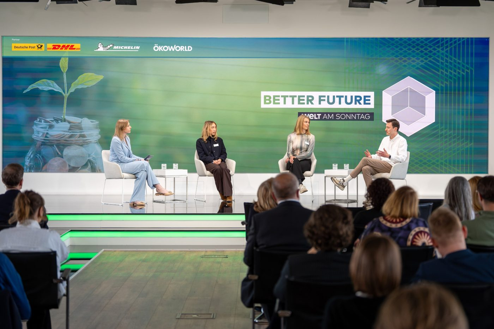
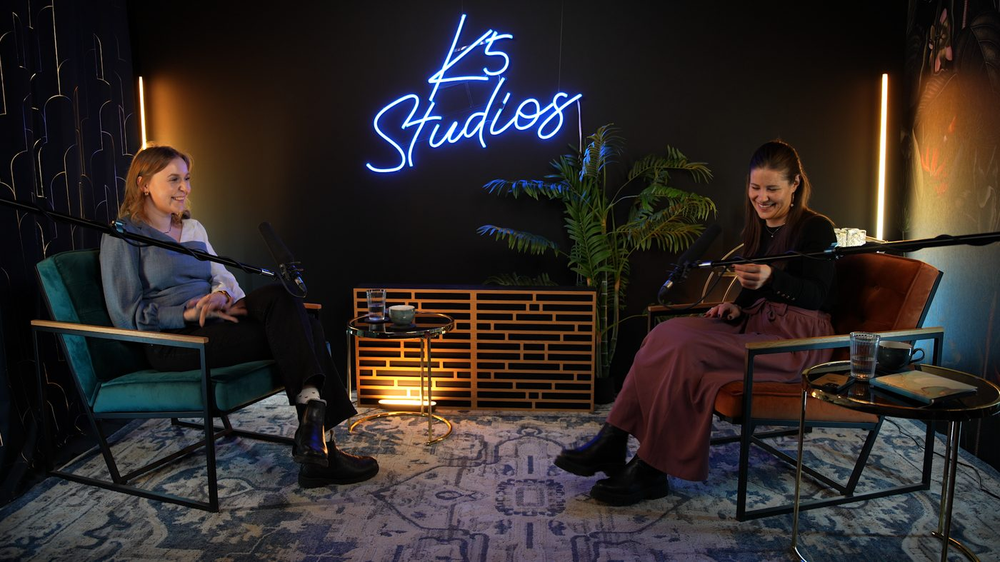
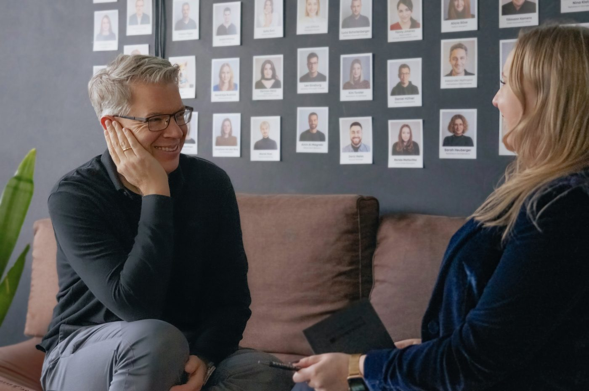
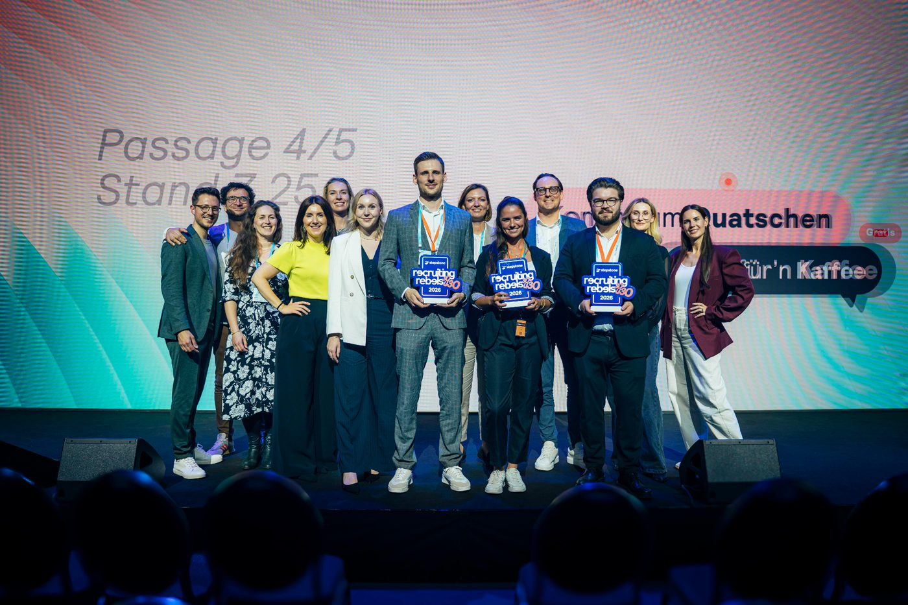
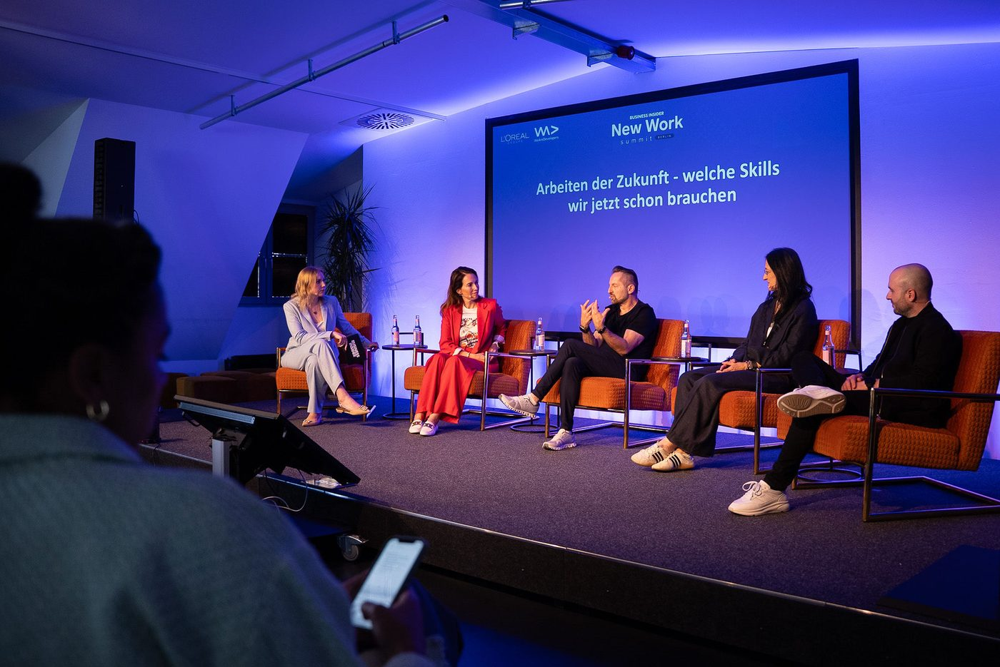
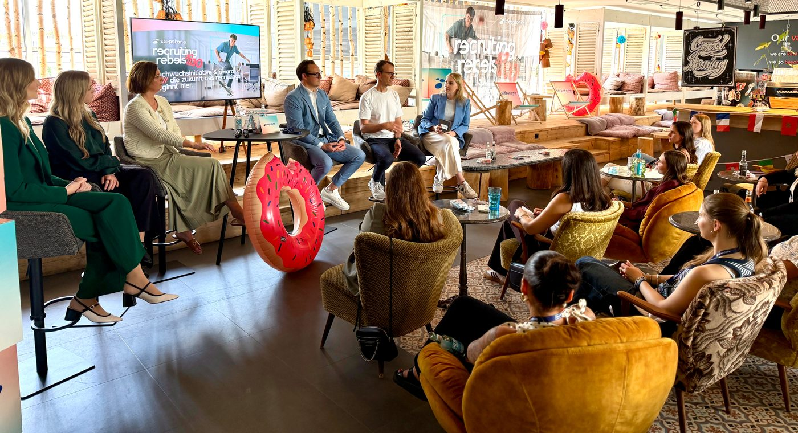
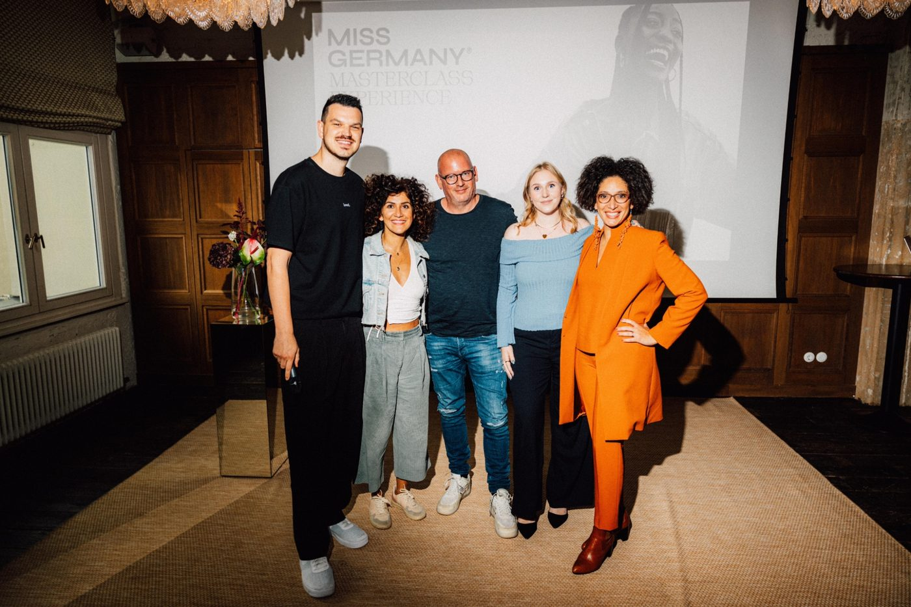
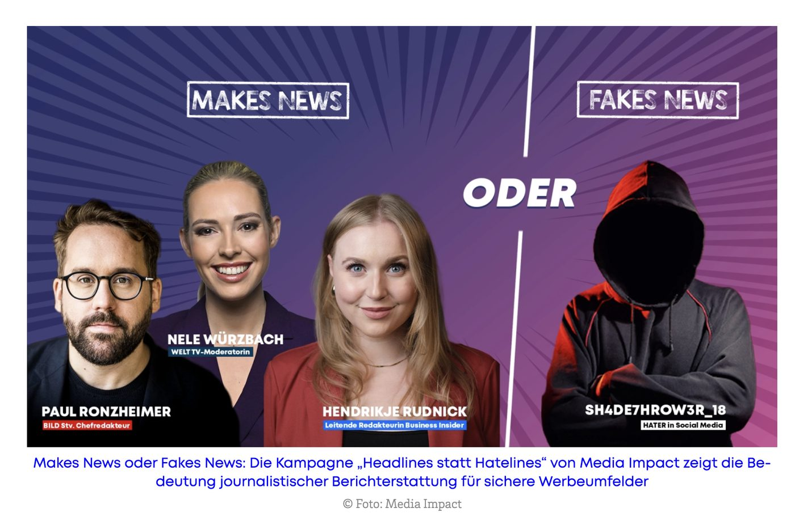
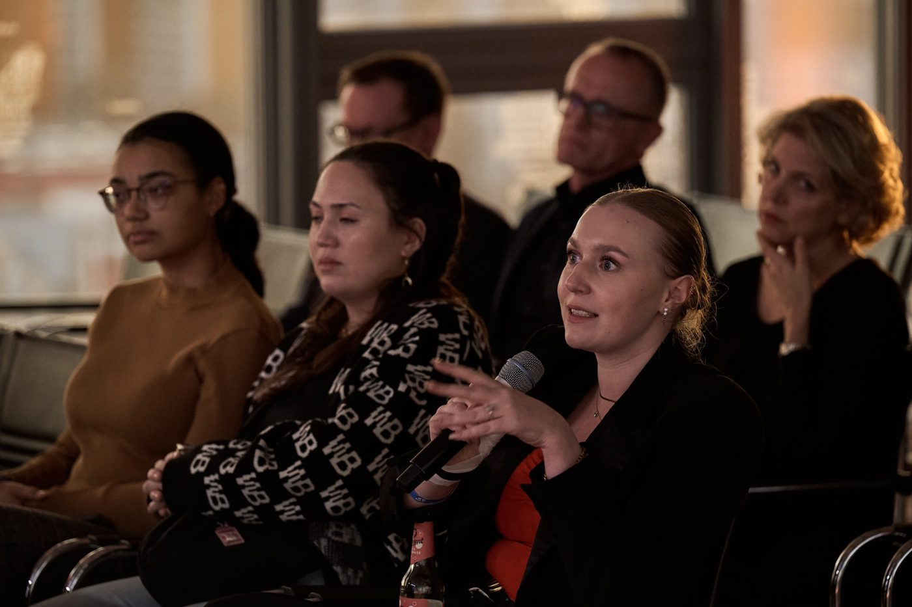
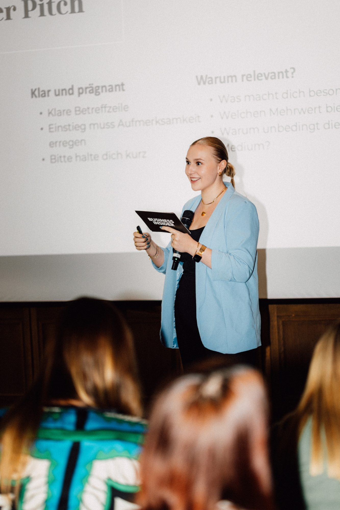
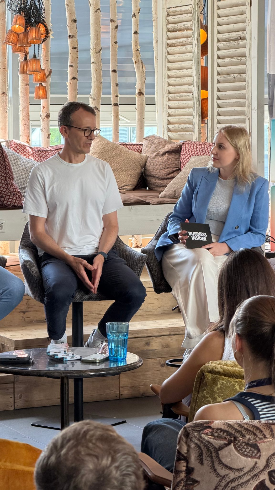
Let's talk
Lass uns sprechen
Ich freue mich, wenn wir uns austauschen und beantworte dir deine Fragen gerne persönlich.
- henni.rudnick@gmail.com
- Berlin, Deutschland
- LinkedIn-Profil
- Business Insider Autorenseite
- WELT Autorenseite